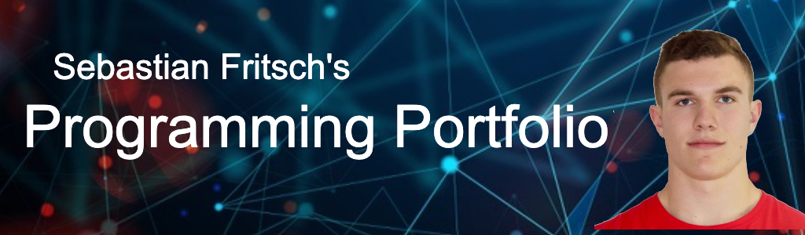

About Me
My name is Sebastian Fritsch. I am a Junior at the University of Rhode Island. I was born and raised in Allendale, New Jersey and still currently live here
I am a computer science and psychology double major. Some of my hobbies and interests include playing sports like football and basketball, and working out. My favorite sports teams are
the Pittsburgh Steelers and the Los Angeles Lakers. Two of my favorite athletes are Lebron James and Ben Roethlisberger. I also am in Tau Kappa Epsilion at URI since freshman year and
enjoy spending time with my brothers.